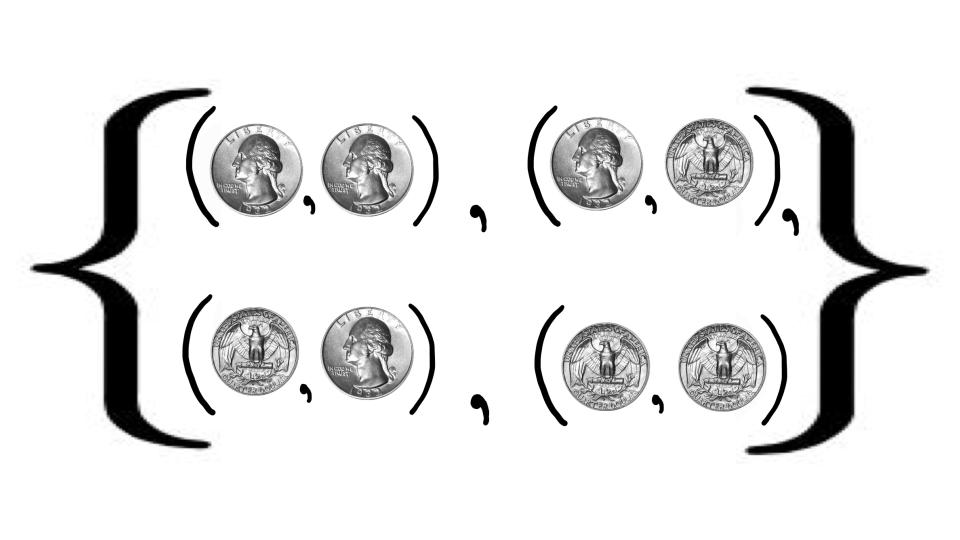
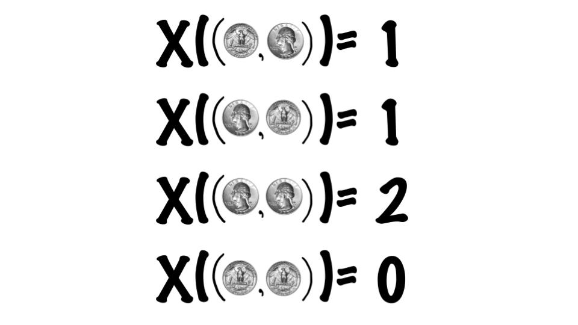
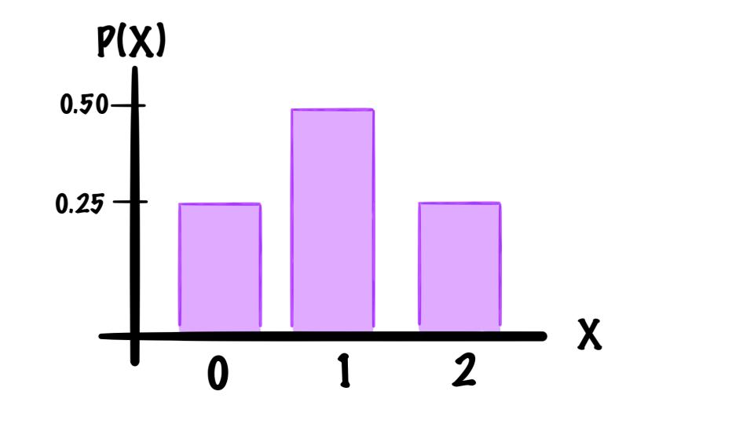

For this example consider the probability experiment of flipping two coins:

Yet this week we are considering random variables... so let our random variable count the number of heads, that is

So we can make our table of outcomes and frequencies as follows
| Outcome (\(X\)) | Frequency |
| 0 | 1 |
| 1 | 2 |
| 2 | 1 |
| Total: | 4 |
Then we can take a frequencies for each outcome and divide by the total frequency and get out probabilities
| Outcome (\(X\)) | Frequency | Probability \(P(x)\) |
| 0 | 1 | \(\frac{1}{4}=0.25\) |
| 1 | 2 | \(\frac{2}{4}=0.50\) |
| 2 | 1 | \(\frac{1}{4}=0.25\) |
| Total: | 4 |
Then Graphing only these probabilities we get
